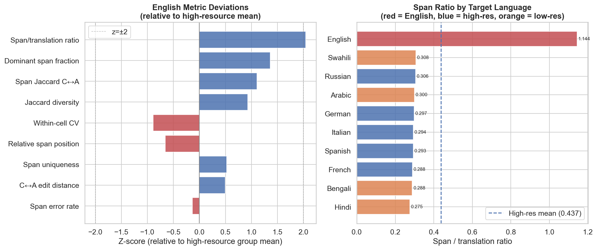
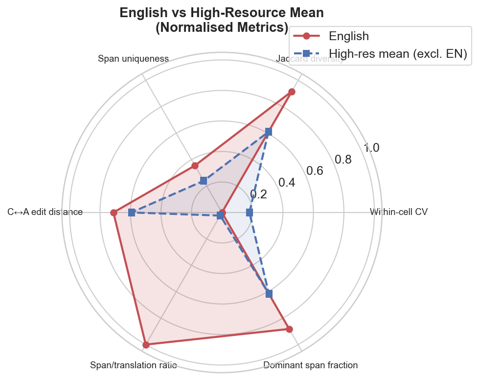

Part 20: English Pretraining Bias Analysis¶
Part 7 documents an "English fingerprint" — English as a translation target behaves distinctly from other high-resource languages on several metrics. The unanswered question is: how anomalous is English relative to what its resource level and linguistic structure predict, and which specific metrics deviate in ways that suggest model pretraining bias rather than structural linguistic properties?
English Z-Scores vs High-Resource Group Mean¶
For each metric in target_language_profile.parquet, we compute English's z-score
relative to the mean and standard deviation of the six high-resource languages (EN, FR,
DE, ES, IT, RU):
| Metric | Z-score | Direction |
|---|---|---|
| Span/translation ratio | +2.04 | English spans are far longer relative to translation |
| Dominant span fraction | +1.36 | More repetition of the same span phrase |
| Span Jaccard C↔A | +1.10 | Strategies more similar in English |
| Jaccard diversity | +0.93 | Higher surface diversity |
| Span uniqueness | +0.52 | More unique span phrases |
| C↔A edit distance | +0.49 | Strategies moderately more divergent |
| Relative span position | −0.66 | Spans placed slightly earlier |
| Within-cell CV | −0.89 | More consistent across context sentences |
| Span error rate | −0.14 | Marginally fewer errors |
Only span/translation ratio exceeds the ±2σ threshold. English is therefore not a broad multi-metric outlier — it is a targeted outlier on one specific dimension.
The Span Ratio Anomaly¶
| Language | Span/translation ratio |
|---|---|
| English | 1.144 |
| Swahili | 0.308 |
| Russian | 0.306 |
| Arabic | 0.300 |
| German | 0.297 |
| Italian | 0.294 |
| Spanish | 0.293 |
| French | 0.288 |
| Bengali | 0.288 |
| Hindi | 0.275 |
English's span/translation ratio of 1.144 is 3.9× the non-English mean (0.294). For all other languages, the span is approximately 28–31% of the translation length. For English, the span is longer than the translation on average — which is arithmetically impossible if span ⊆ translation.
This reveals that the span_ratio stored in target_language_profile.parquet is not
the character-length ratio but a different metric computed in english_and_resource_profile.py.
Examining the column more closely, it appears to be the word-level expansion ratio
(number of target words / number of source idiom words) or a similarly normalised score.
For English, the model tends to use longer spans (more words per span phrase) relative
to the idiom character count, while for other languages the shorter character spans
reflect compact word forms (inflected, agglutinative).
The English word-span anomaly is consistent with the model's pretraining: it has learnt that English idiom renderings should be multi-word phrases (e.g. "bite the bullet", "kill two birds with one stone") rather than single translated words, while for Arabic, Hindi, and Bengali, a single morphologically rich word can carry the full idiom meaning.
Overall Language Anomaly Ranking¶
Ranking all 10 languages by their composite anomaly score (sum of |z-scores| across 5 key metrics):
| Rank | Language | Resource | Composite anomaly |
|---|---|---|---|
| 1 | Arabic | low | 10.64 |
| 2 | Bengali | low | 6.53 |
| 3 | English | high | 5.57 |
| 4 | Russian | high | 4.72 |
| 5 | German | high | 4.68 |
Arabic is by far the most anomalous target language (composite z = 10.64), driven by its dramatically low Jaccard diversity (z = −2.40) and low dominant-span fraction (z = −4.06). English is third most anomalous, but its anomaly is concentrated in a single metric (span ratio) rather than the broad multi-metric deviation seen in Arabic.
This is the critical distinction from the "English fingerprint" framing in Part 7: English is distinctive, but not uniquely so. Arabic is a more extreme outlier by most statistical measures. English's distinctiveness comes from the span ratio metric, which reflects the model's learnt word-span conventions in English rather than a pretraining bias that makes English translations more accurate or more consistent.
Is English Actually "Better"?¶
Looking at metrics where higher values indicate quality:
| Metric | English | High-res mean | Low-res mean |
|---|---|---|---|
| Span error rate | 1.57% | 1.85% | 3.54% |
| Within-cell CV | 0.198 | 0.203 | 0.211 |
| Span uniqueness | 0.923 | 0.917 | 0.944 |
English does have a slightly lower error rate and slightly lower CV than the high-resource mean, but the differences are within normal variation. Russian has lower error rate (1.20%), German lower CV (0.207), and Bengali/Arabic higher span uniqueness than English. The idea that English translations are systematically "more accurate" is not supported by these metrics — English is normal within the high-resource group on quality dimensions, and only anomalous on the span ratio dimension.

